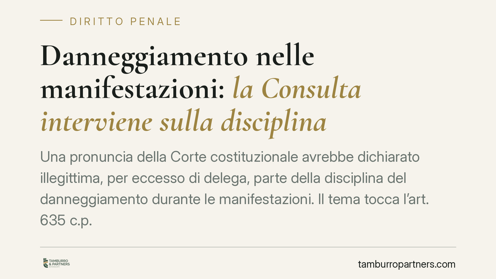

Danneggiamento nelle manifestazioni: la Consulta interviene sulla disciplina
Una pronuncia della Corte costituzionale avrebbe dichiarato illegittima, per eccesso di delega, parte della disciplina del danneggiamento durante le manifestazioni. Il tema tocca l'art. 635 c.p. e la riforma del 2016. Prima di trarre conclusioni servono cautela sugli estremi della decisione e chiarezza sul meccanismo giuridico in gioco. Proviamo a distinguere ciò che è certo da ciò che va verificato.

Il caso, con le dovute cautele
La notizia riguarda una pronuncia della Corte costituzionale che, secondo quanto riportato, avrebbe dichiarato illegittima per eccesso di delega una parte della disciplina introdotta dal D.lgs. 7/2016 in materia di danneggiamento connesso alle manifestazioni.
Una precisazione è doverosa. Gli estremi della decisione (numerazione e data) non risultano al momento verificabili in modo autonomo. Trattiamo quindi la pronuncia come citazione da verificare: le considerazioni che seguono valgono *ove la sentenza sia confermata nei termini riportati*. Chi deve assumere scelte processuali non può basarsi su una massima non ancora consultata nel testo integrale.
Inquadramento normativo
L'art. 635 c.p. punisce il danneggiamento, cioè il fatto di chi distrugge, disperde, deteriora o rende inservibili, in tutto o in parte, cose mobili o immobili altrui. La riforma del 2016 (D.lgs. 7/2016) ha ridisegnato questo settore, abrogando alcune ipotesi di danneggiamento semplice e trasformandole in illeciti civili soggetti a sanzione pecuniaria civile, mentre altre fattispecie sono rimaste penalmente rilevanti.
Un chiarimento sul contesto. L'art. 18 TULPS (r.d. 773/1931) disciplina il preavviso delle riunioni in luogo pubblico: rileva qui solo come elemento di fatto (manifestazione preavvisata o meno), non come fonte del trattamento sanzionatorio del danneggiamento. Non è l'art. 18 TULPS a determinare la qualificazione o la pena del reato.
Cos'è l'eccesso di delega
Quando il Parlamento delega il Governo a emanare un decreto legislativo, fissa nella legge delega i principi e i criteri direttivi. Se il Governo va oltre questi limiti, il decreto è viziato per eccesso di delega e può essere dichiarato incostituzionale per violazione dell'art. 76 della Costituzione.
Di regola, una dichiarazione di illegittimità travolge la norma *ab origine*: la disposizione viene considerata come mai entrata in vigore, con effetti retroattivi. Per questo un discrimine temporale che "salvi" i fatti successivi a una certa data non è un esito scontato di un vizio di delega.
Il nodo della data
La ricostruzione secondo cui l'illegittimità colpirebbe i fatti anteriori a una certa soglia, lasciando però punibili quelli successivi, richiede una spiegazione precisa. Un effetto temporale di questo tipo è compatibile, in linea di principio, con un intervento normativo successivo che abbia ripristinato una valida copertura legislativa della fattispecie (ad esempio una nuova disposizione adottata nel rispetto dei limiti costituzionali).
In altri termini: la norma del 2016 cadrebbe per il periodo in cui ha operato senza valida base, mentre i fatti commessi dopo l'intervento correttivo resterebbero disciplinati dalla norma "sanata". Finché non si legge il testo della decisione, però, questa logica va considerata come ipotesi interpretativa, non come dato acquisito.
Implicazioni pratiche
Il punto decisivo diventa la data del fatto. Per i fatti collocati nel periodo coperto dall'eventuale dichiarazione di illegittimità, può porsi la questione della revisione del trattamento sanzionatorio o della stessa rilevanza penale.
Qui opera l'art. 30 della legge 87/1953: quando una norma penale è dichiarata incostituzionale, cessano l'esecuzione e gli effetti penali della condanna fondata su quella norma. È lo strumento che consente di far valere, nelle sedi proprie, le conseguenze di una pronuncia di illegittimità anche su giudicati già formati.
Attenzione però a un passaggio spesso trascurato. L'eventuale caduta di una specifica aggravante o fattispecie non esclude che la condotta integri altri reati: lesioni, resistenza a pubblico ufficiale, violenza privata, deturpamento. La valutazione va fatta sul fatto concreto nel suo complesso, non sulla sola etichetta del danneggiamento.
Cosa fare in concreto
- Verificare gli estremi esatti della pronuncia e reperirne il testo integrale prima di assumere qualsiasi iniziativa.
- Individuare con precisione la data del fatto contestato, perché da essa dipende l'eventuale applicabilità degli effetti della decisione.
- Valutare, nei procedimenti in corso o definiti, la pertinenza dell'art. 30 l. 87/1953 rispetto alla posizione specifica.
- Esaminare se la condotta integri altre fattispecie penali autonome, che restano impregiudicate.
- Rivolgersi a un professionista per l'analisi del singolo caso, evitando conclusioni generalizzate.
Conclusione
La vicenda conferma quanto il diritto penale sia sensibile ai meccanismi di produzione normativa. Una delega mal attuata può riverberarsi su migliaia di posizioni. Resta però essenziale distinguere la notizia dalla sua verifica: su una pronuncia i cui estremi non sono ancora riscontrabili, la prudenza non è un difetto, ma un metodo.
Contributo informativo a cura di Tamburro & Partners Avvocati. Non costituisce parere legale.
Ogni condominio ha una storia a sé.
Se gestisci un'amministrazione e vuoi un confronto su una specifica questione condominiale, scrivi allo studio. Ti rispondiamo entro un giorno lavorativo.